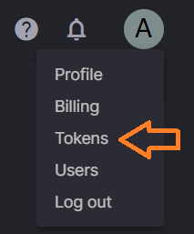

<div class="toolbar" role="banner">
  
  <span>Image processing demo</span>
  <div class="spacer"></div>
  <a aria-label="Quix on twitter" target="_blank" rel="noopener" href="https://twitter.com/Quix_io" title="Twitter">
    <svg id="twitter-logo" height="24" data-name="Logo" xmlns="http://www.w3.org/2000/svg" viewBox="0 0 400 400">
      <rect width="400" height="400" fill="none"/>
      <path d="M153.62,301.59c94.34,0,145.94-78.16,145.94-145.94,0-2.22,0-4.43-.15-6.63A104.36,104.36,0,0,0,325,122.47a102.38,102.38,0,0,1-29.46,8.07,51.47,51.47,0,0,0,22.55-28.37,102.79,102.79,0,0,1-32.57,12.45,51.34,51.34,0,0,0-87.41,46.78A145.62,145.62,0,0,1,92.4,107.81a51.33,51.33,0,0,0,15.88,68.47A50.91,50.91,0,0,1,85,169.86c0,.21,0,.43,0,.65a51.31,51.31,0,0,0,41.15,50.28,51.21,51.21,0,0,1-23.16.88,51.35,51.35,0,0,0,47.92,35.62,102.92,102.92,0,0,1-63.7,22A104.41,104.41,0,0,1,75,278.55a145.21,145.21,0,0,0,78.62,23" fill="#fff"/>
    </svg>
  </a>
  <a aria-label="Quix on YouTube" target="_blank" rel="noopener" href="https://www.youtube.com/channel/UCrijXvbQg67m9-le28c7rPA" title="YouTube">
    <svg id="youtube-logo" height="24" width="24" data-name="Logo" xmlns="http://www.w3.org/2000/svg" viewBox="0 0 24 24" fill="#fff">
      <path d="M0 0h24v24H0V0z" fill="none"/>
      <path d="M21.58 7.19c-.23-.86-.91-1.54-1.77-1.77C18.25 5 12 5 12 5s-6.25 0-7.81.42c-.86.23-1.54.91-1.77 1.77C2 8.75 2 12 2 12s0 3.25.42 4.81c.23.86.91 1.54 1.77 1.77C5.75 19 12 19 12 19s6.25 0 7.81-.42c.86-.23 1.54-.91 1.77-1.77C22 15.25 22 12 22 12s0-3.25-.42-4.81zM10 15V9l5.2 3-5.2 3z"/>
    </svg>
  </a>
</div>

<div *ngIf="showTokenWarning" class="error" role="banner">
  <br>
  <span>
    ERROR! Please edit the file 'environment-variables.service.ts' and add your Token.
  </span>
  <br>
  <span>
    Get a token from the token menu in the Quix portal
    <a href="https://portal.platform.quix.ai" target="_blank">here</a>
    <br/>
    
  </span>
</div>

<div class="clr-row clr-justify-content-center" style="margin: 70px 20px 20px;">
  <div class="clr-col-4 clr-col">
    <div class="" style="margin-bottom: 10px">
      TFL Processed Image Feed
    </div>
    <div class="">
      
    </div>
    <button (click)="startStopButtonClick()" style="margin-top: 10px">{{startStopButtonText}}</button>
  </div>

  <div class="clr-col-8">
    <div class="clr-col">
      <div class="" style="margin-bottom: 10px">
      Select object type:
        <select [(ngModel)]="selectedObject" (ngModelChange)="selectedObjectChanged($event)">
          <option *ngFor="let option of objectTypes" [ngValue]="option">
            {{option}}
          </option>
        </select>
        finding {{selectedObject}} ...
      </div>
      <div class="">

        <agm-map #map [zoom]="10" maxZoom="25"
                 [fitBounds]="false"
                 [latitude]="lat"
                 [longitude]="lng"
                  style="padding-right:10px; height: 600px; width: 100%; max-width: 500px"
                 (mapReady)="onMapReady($event)">
        </agm-map>
      </div>
    </div>
  </div>
</div>


